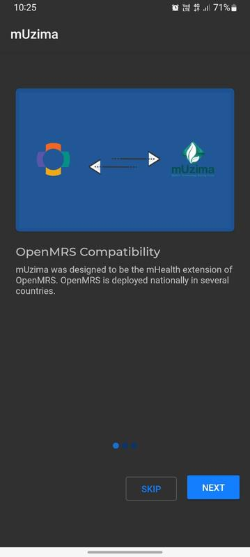
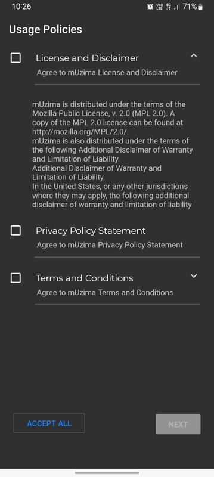
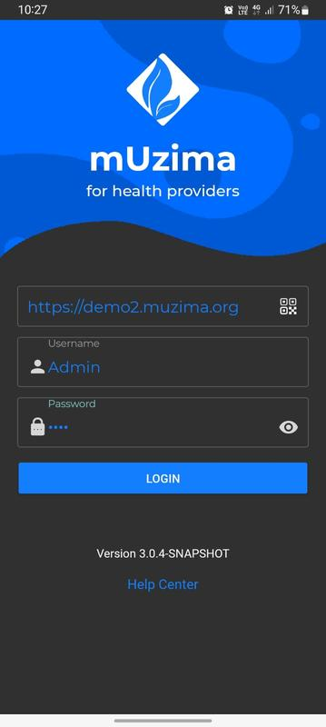
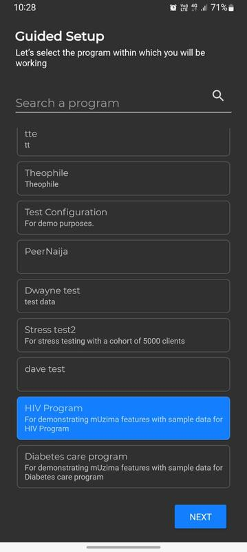
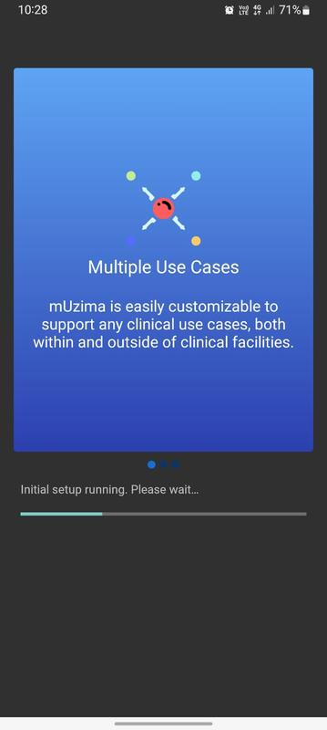
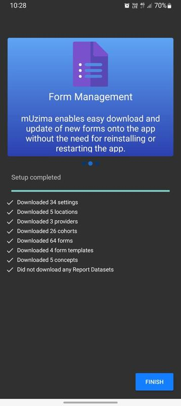

mUzima
mUzima एक एंड्रॉइड एप्लिकेशन है जो बिल्ट इन लॉजिक और बाधाओं के साथ html5 फॉर्म प्रस्तुत करता है। आवेदन सहित विभिन्न संकेत हैं; टेक्स्ट, नंबर, लोकेशन और मल्टीमीडिया जो ऑनलाइन और ऑफलाइन दोनों स्थितियों में चल सकता है।
इंस्टॉलेशन
मुज़िमा को स्थापित करने के लिए आपको एक Android डिवाइस की आवश्यकता होगी। या एक एमुलेटर स्थापित करें यदि आपके पास एक नहीं है। मुज़िमा एंड्रॉइड वर्जन 7.0 और इसके बाद के संस्करण पर चलता है।
एप्लिकेशन का उपयोग करना
mUzima एप्लिकेशन आपके एप्लिकेशन ड्रॉअर में दिखाई देगा। एप्लिकेशन लॉन्च करने के लिए इसे चुनें।
चरण 1

- स्लाइड शो देखने के लिए अगला क्लिक करें या सेटअप के साथ आगे बढ़ने के लिए छोड़ें।
- मुज़िमा ऐप सुविधाओं के स्लाइड शो के लिए अगला बटन क्लिक करें। या, मुज़िमा सेटअप के साथ जारी रखने के लिए स्किप बटन पर क्लिक करें
चरण 2

- चेकबॉक्स का उपयोग करके mUzima सॉफ़्टवेयर उपयोग नीतियों को पढ़ें और उनसे सहमत हों।
- सभी को स्वीकार करें बटन पर क्लिक करें। फिर मुज़िमा सेटअप के साथ जारी रखने के लिए अगला बटन क्लिक करें।
चरण 3

पहली बार जब आप लॉग इन करते हैं, तो आपके पास तीन टेक्स्ट इनपुट प्रॉम्प्ट होंगे।
- URL फ़ील्ड: सर्वर से url के लिए यह संकेत है कि एप्लिकेशन संचार करेगा। उदाहरण के लिए:
"https://demo2.muzima.org"।
- उपयोगकर्ता नाम: उपयोगकर्ता के लिए आवेदन का उपयोग करने के लिए मान्य उपयोगकर्ता नाम दर्ज करें। यह उपयोगकर्ता एक मान्य होना चाहिए
सर्वर पर प्रदाता।
- पासवर्ड: उपयोगकर्ता नाम प्रांप्ट में दिए गए उपयोगकर्ता नाम के लिए पासवर्ड दर्ज करें।
- प्रमाणित करने के लिए लॉगिन पर क्लिक करें।
सफल प्रमाणीकरण के बाद आपको मुज़िमा ऐप सेट करने के लिए एक विज़ार्ड के माध्यम से ले जाया जाएगा।
चरण 4

- mUzima ऐप संस्करण 3.x निर्देशित कॉन्फ़िगरेशन का उपयोग करता है।
- प्रोग्राम की सूची में उस प्रोग्राम का चयन करें जिसका आप उपयोग करना चाहते हैं।
- मुज़िमा की स्थापना जारी रखने के लिए अगला बटन क्लिक करें।
चरण 5

- मुज़िमा ऐप की स्थापना की जाएगी।
- स्थापना का समय सर्वर से डाउनलोड किए जा रहे डेटा की मात्रा पर निर्भर करता है।
चरण 6

- mUzima ऐप सफलतापूर्वक सेट हो जाएगा
- कॉन्फ़िगरेशन चरणों को पूरा करने के लिए FINISH बटन पर क्लिक करें।
- mUzima ऐप सेट करने के चरणों को पूरा करने के बाद, mUzima ऐप होम पेज प्रदर्शित करेगा। मुज़िमा सॉफ्टवेयर उपयोग के लिए तैयार है।